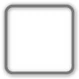

Traits UI Themes¶
Beginning in Traits 3.0, Traits UI supports using themes to customize the appearance of user interfaces, by applying graphical elements extracted from simple images. For example, Figure 8 shows an unthemed Traits user interface.

Figure 8: Unthemed Traits user interface
Figure 9 shows the same user interface with a theme applied to it.
Figure 9: Themed Traits user interface
Figure 10 shows the same user interface with a different theme applied.
Figure 10: Theme Traits user interface with alternate theme
Theme Data¶
All of the data used by Traits UI for themes is in the form of simple images, a few examples of which are shown in Figure 11:

Figure 11: Theme images
Any type of JPEG or Portable Network Graphics (PNG) file is supported. In particular, PNG files with alpha information allow smooth compositing of multiple theme images. The first image in Figure 11 is an example of a PNG file containing alpha information. That is, the interior of the rectangle is not gray, but transparent, with a thin alpha gradient shadow around its edges.
Themeable Traits UI Elements¶
Theme information can be applied to the following classes of Traits UI objects:
All of these classes have item_theme and label_theme attributes, which specify the themes for an editor and its label, respectively; the Group class also has a group_theme attribute, which specifies the theme for the group itself. These attributes are defined to be Theme traits, which accept values which are either PyFace ImageResource objects, or strings that specify an image file to use. In the case of string values, no path information need be included. The path to the image file is assumed to be the images subdirectory or images.zip file located in the same directory as the source file containing the string. [13] However, if the string begins with an ‘@’ (at-sign), the string is assumed to be a reference to an image in the default image library provided with PyFace. [14]
The item_theme and label_theme attributes are transferred via containment. That is, if an Item object has an item_theme defined, that value is used for the Item object’s editor. If item_theme is not defined on the Item object, the item_theme value from the containing Group is used, and so on up to the item_theme value on containing View, if necessary. Therefore, it is possible to set the item and label themes for a whole user interface at the view level.
The group_theme attribute value is not transferred through containment, but nested groups automatically visually inherit the theme of the containing group. You can, of course, explicitly specify theme information at each level of a nested group hierarchy.
Adding Themes to a UI¶
To add themes to a Traits user interface, you add the theme-related attributes to the View, Group, and Item definitions. Example 10 shows the code for the unthemed user interface shown in Figure 8.
Example 10: Traits UI without themes
1 2 3 4 5 6 7 8 9 10 11 12 13 14 15 16 17 18 19 20 21 22 | # unthemed.py -- Example of a Traits UI without themes
from traits.api import HasTraits, Str, Range, Float, Enum
from traitsui.api import View, Group, Item, Label
class Test ( HasTraits ):
name = Str
age = Range( 1, 100 )
weight = Float
gender = Enum( 'Male', 'Female' )
view = View(
Group(
Label( 'An Unthemed Label' ),
Item( 'name' ),
Item( 'age' ),
Item( 'weight' ),
Item( 'gender' )
),
title = 'Unthemed Traits UI',
)
Test().configure_traits()
|
Example 11 shows the code for the user interface shown in Figure 9, which is essentially the same as in Example 10, but with theme data added.
Example 11: Traits UI with themes
1 2 3 4 5 6 7 8 9 10 11 12 13 14 15 16 17 18 19 20 21 22 23 24 25 26 27 28 29 30 31 | # themed.py -- Example of a Traits UI with themes
from traits.api import HasTraits, Str, Range, Float, Enum
from traitsui.api import View, Group, Item, Label
from traitsui.wx.themed_text_editor import \
ThemedTextEditor
class Test ( HasTraits ):
name = Str
age = Range( 1, 100 )
weight = Float
gender = Enum( 'Male', 'Female' )
view = View(
Group(
Group(
Label( 'A Themed Label', '@GF6' ),
Item( 'name' ),
Item( 'age' ),
Item( 'weight', editor=ThemedTextEditor()),
Item( 'gender' ),
group_theme = '@GD0'
),
group_theme = '@G',
item_theme = '@B0B',
label_theme = '@BEA'
),
title = 'Themed Traits UI',
)
Test().configure_traits()
|
This example uses the following theme-related items:
- The group_theme, item_theme, and label_theme attributes are explicitly specified (lines 24 to 26).
- The Label constructor (line 17)takes an optional second argument (in this case '@GF6‘), which specifies the item_theme information for the Label object. (Label is a subclass of Item.)
- The item for weight (line 20) uses a ThemedTextEditor factory; this isn’t strictly necessary, but illustrates the use of a themed editor factory. For more information on themed editor factories, refer to “Extra” Trait Editor Factories, and to the Traits API Reference.
- The example contains an extra Group level (line 16), and shows the results of two nested group_theme values (‘@G’ and '@GD0‘). The outermost group_theme value (‘@G’) specifies the gray background, while the innermost group_theme value ('@GD0‘) specifies the light gray rectangle drawn over it. This combination demonstrates the automatic compositing of themes, since the rounded rectangle is transparent except where the light gray band appears.
- The theme data strings use the ‘@’ prefix to reference images from the default image library.
Footnotes
| [13] | This is very similar to the way that PyFace ImageResource objects work when no search path is specified. |
| [14] | PyFace is provided by the pyface package in the Traits GUI project (not to be confused with the Traits UI package, traitsui, the subject of this document.) |

Table Of Contents
Previous topic
Controlling the Interface: the Handler
Next topic
Introduction to Trait Editor Factories